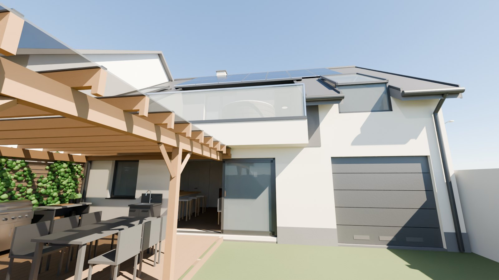

Rodinný dům 5+kk se sedlovou střechou, zapuštěnou terasou v podkroví a garáží průjezdnou do zahrady. Všechno o projektu na jednom místě.

Živý přehled fází – co je hotové, co probíhá a co nás čeká, s kroky a fotkami ke každé fázi.
📅→Úprava plánu – fáze, dílčí kroky, termíny a Gantt. Odtud se bere stav pro celý web.
📷→Fotodokumentace po dnech a fázích – fotku přidá kdokoli přímo z mobilu.
🔌→Elektřina, plyn, voda a kanalizace – stav, časová osa a co ještě zařídit.
Sdílený rozpočet po kategoriích – cena oficiální i odhad, součty v reálném čase.
✅→Společný seznam, co zařídit a rozhodnout – kdo, do kdy a ke které fázi. Odškrtnutí vidí všichni.
📝→Společné poznámky v reálném čase – každý zapíše pod svým jménem.
Procházka domem, vypínání vrstev, pohled do místností a konfigurátor barev.
ℹ️→Přesné údaje z projektové dokumentace – plochy místností, konstrukce, technika, pozemek.
🧱→Materiály a skladby dle projektu – zdivo, střecha, izolace, vytápění – plus co je k výběru.
📐→Výkresy k prohlížení – základy, půdorysy, řez, pohledy, sjezd a koordinační situace.
🖍️→Zakresli do půdorysu vedení elektřiny, zásuvky a světla a sdílej výsledek do Dokumentace.